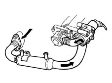

CONSTRUCTION SPECIFICATIONS
- Path
- Descriptions > 10 ENGINE > 1080 EMISSION CONTROL SYSTEM > 1080C MOTOR FOR EGR VALVE SELF-ADJUSTMENT - R.R. > CONSTRUCTION SPECIFICATIONS
- Kind
- system description
- Applies to
- engines: 2.4 JTD 10V; all production periods
- Interactive page
- https://sloeber94.github.io/elrnDB-lThss/en/#/629224
Applies to: engines: 2.4 JTD 10V; all production periods
This system makes it possible to send some (5+15%) of the exhaust gases to the intake in certain operating conditions.
This lowers the peak temperature in the combustion chamber restricting the formation of nitrogen oxides (NOx).
